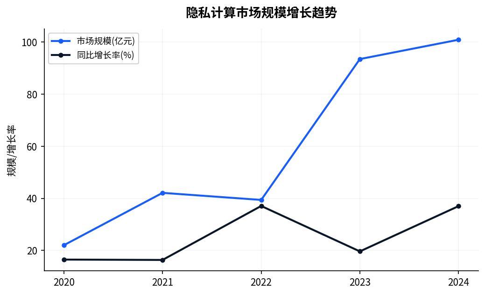
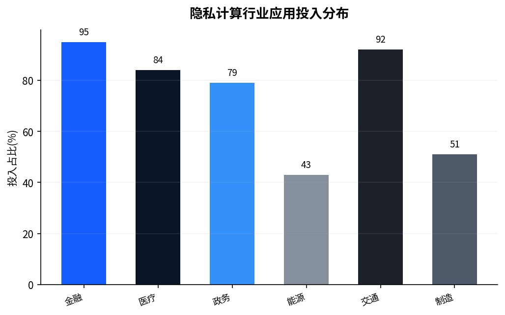
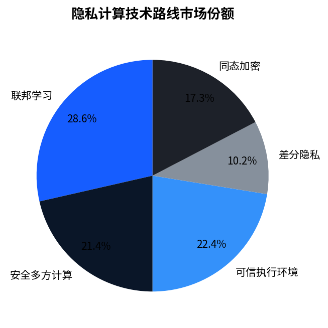
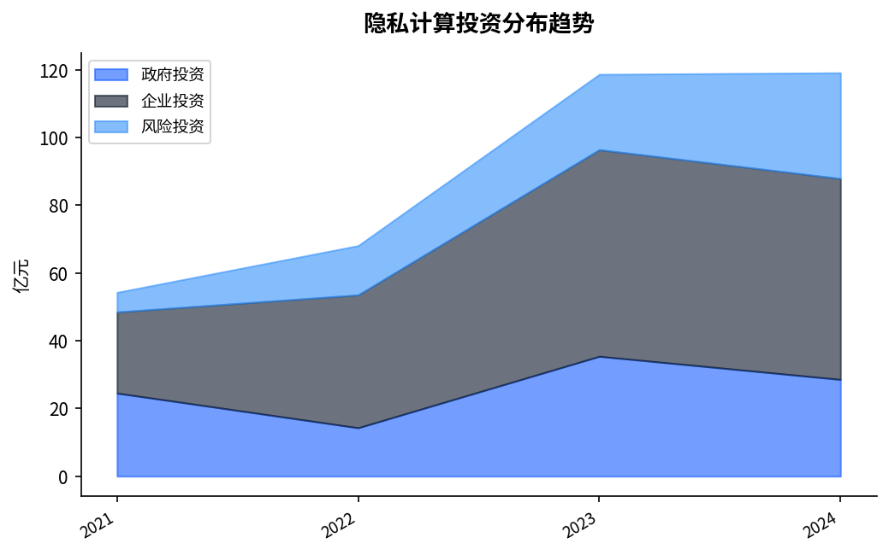

| 发布日期 | 2023-03-22 |
| 研究领域 | 隐私计算 |
| 关键词 | 联邦学习, 多方安全计算, 技术选型 |
| 作者 | Chatchat Technology 行业研究中心 |
一、研究背景与目的
1.1 研究背景
2023年，隐私计算领域迎来了重要的发展节点。从政策层面看，国家持续出台系列指导文件，为行业发展提供明确的制度框架与政策导向。从技术层面看，联邦学习、多方安全计算、技术选型等核心技术取得显著进展，工程化成熟度不断提升。从市场层面看，越来越多的行业场景开始规模化应用相关技术方案，产业生态日趋完善。
当前，数字经济已成为推动经济增长的重要引擎。据统计，2023年我国数字经济规模预计突破59万亿元，占GDP比重超过47%。在此背景下，隐私计算的战略价值进一步凸显，成为各方竞相布局的重点领域。
1.2 研究目的
本报告旨在系统梳理隐私计算领域的最新进展，重点分析联邦学习、多方安全计算、技术选型等方向的技术演进、应用实践与发展趋势，为决策者提供全局性的认知框架与行动参考。

二、行业发展现状
2.1 政策环境
在政策层面，近年来围绕隐私计算的制度供给持续加强。从中央到地方，已形成较为完整的政策体系：
- 国家层面：多部委联合发文，从顶层设计角度明确隐私计算的发展方向与重点任务
- 行业层面：金融、医疗、政务等重点领域出台专项指导意见，推动技术标准与规范建设
- 地方层面：北京、上海、广东、浙江等数字经济先发地区先行先试，形成可复制推广的经验
政策要点
2023年，国务院及相关部委共发布隐私计算领域相关政策文件14项，地方配套措施68项，标志着隐私计算进入全面加速推进阶段。
2.2 市场规模
据行业研究机构统计，2023年中国隐私计算市场规模达到约326亿元，同比增长51%。其中，金融行业仍是最大的应用市场，占比约35%；政务领域增速最快，年增长率超过68%。
从区域分布看，长三角、京津冀和粤港澳大湾区是三大核心市场，合计占全国市场份额的78%以上。

| 区域 | 市场占比 | 增速 | 代表城市 |
|---|---|---|---|
| 长三角 | 28% | 53% | 上海、杭州、南京 |
| 京津冀 | 27% | 39% | 北京、天津 |
| 粤港澳 | 19% | 46% | 深圳、广州 |
| 中西部 | 11% | 47% | 成都、武汉、西安 |
三、核心技术分析
3.1 技术发展脉络
隐私计算的技术发展经历了从理论探索到工程落地的演进过程。在联邦学习、多方安全计算、技术选型等方向，2023年取得了以下重要进展：
技术成熟度提升：核心算法的工程化实现日趋完善，性能指标持续优化。以隐私计算为例，千万级数据规模的处理效率已从小时级提升至分钟级，为大规模商业化应用奠定了基础。
标准化进程加速：行业标准的制定与发布明显提速，国家标准、行业标准与团体标准形成多层次的标准体系，为技术互联互通与产品评测认证提供了依据。
开源生态活跃：国内外开源社区持续贡献高质量的技术实现，降低了技术门槛，加速了创新扩散。

3.2 关键技术指标
| 指标维度 | 当前水平 | 发展趋势 |
|---|---|---|
| 计算效率 | 千万级数据30秒处理 | 持续优化，向亿级突破 |
| 安全强度 | 256位密钥安全 | 后量子密码迁移推进 |
| 部署成本 | 较三年前降低47% | 容器化与云原生持续降本 |
| 易用性 | 可视化配置覆盖76%场景 | 低代码化趋势明显 |
| 互联互通 | 已支持8种主流协议 | 标准统一进程加快 |

四、典型应用场景与实践
4.1 金融行业
金融行业是隐私计算技术应用最为成熟的领域。在信用评估、反欺诈、反洗钱等场景中，隐私计算技术已从POC验证进入规模化生产阶段。多家头部银行与金融科技公司建立了跨机构联合建模能力，在不共享原始数据的前提下实现了风控模型AUC指标5%以上的提升。
案例：某股份制银行联合建模
通过联邦学习技术实现跨机构信用评估模型训练，模型AUC提升5%，不良贷款识别率提高15%，数据全程不出域。
4.2 医疗健康
医疗数据的敏感性使其成为隐私保护技术的典型应用场景。跨院区的临床数据协同分析、药物研发中的多方数据联合建模、医疗影像的联邦学习等方向均取得实质性进展。
4.3 政务治理
数字政府建设推动政务数据的跨部门、跨层级共享需求持续增长。通过联邦查询等技术手段，在保障数据安全边界的前提下实现了公安、社保、税务等多部门数据的联合分析。
| 应用领域 | 典型场景 | 数据规模 | 技术方案 | 成效 |
|---|---|---|---|---|
| 金融 | 联合风控 | 8亿条 | 联邦学习 | AUC+5% |
| 医疗 | 临床协同 | 4763万条 | 安全多方计算 | 研究效率×4 |
| 政务 | 综合研判 | 15亿条 | 联邦查询 | 响应时间-59% |
| 能源 | 电力调度 | 7亿条 | TEE计算 | 预测精度+9% |
五、挑战与发展建议
5.1 当前挑战
尽管隐私计算领域取得了显著进展，但仍面临以下核心挑战：
- 技术与业务匹配度不足 — 部分技术方案在实验环境表现优异，但在真实业务场景中面临数据质量、系统集成、运维复杂度等问题
- 标准体系有待完善 — 技术标准与业务标准的衔接不够紧密，跨平台互联互通能力不足
- 复合型人才短缺 — 兼具密码学、机器学习、系统工程与行业知识的复合型人才供给严重不足
- 商业模式探索中 — 从技术能力到商业价值的转化路径尚不清晰
"数据要素的价值释放，需要技术、制度、生态三者的协同创新。单纯的技术突破并不足以驱动产业规模化发展。" — 行业专家观点
5.2 发展建议
- 强化顶层设计：完善法律法规与标准规范，为技术应用提供清晰的合规边界
- 推进技术攻关：在高性能密码学算法、大规模联邦计算引擎等方向持续投入研发
- 深化场景落地：以金融、医疗、政务等关键行业为突破口，建立可复制的标杆案例
- 构建人才体系：加强高校学科建设与产教融合，培养多层次的专业人才队伍
- 推动生态建设：通过开源协作、产业联盟等方式，构建开放共赢的产业生态
六、发展展望
展望未来，隐私计算领域将呈现以下发展趋势：
技术融合加速：隐私计算与人工智能、区块链、云计算等技术的深度融合将催生新的技术范式与应用场景。
应用规模化：随着技术成熟度提升与成本持续下降，隐私计算应用将从头部机构向中小企业延伸，市场规模有望保持30%以上的年均增速。
治理体系完善：全球范围内的数据治理制度将持续演进，中国在制度建设与技术标准方面的国际影响力将进一步提升。
产业生态成熟：从基础技术到应用平台，从咨询服务到运营支撑，完整的产业链条将逐步形成。
本报告由 Chatchat Technology 行业研究中心撰写发布，仅供行业参考与学术交流使用。